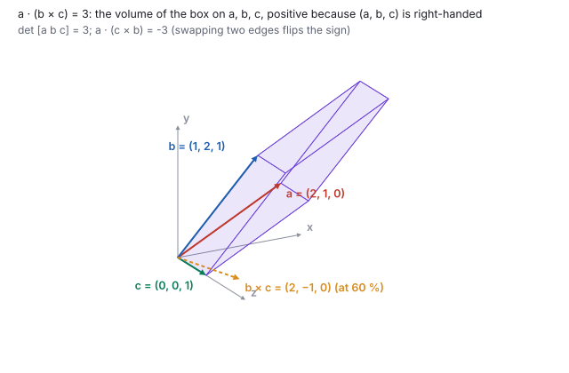
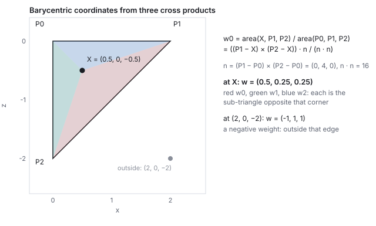
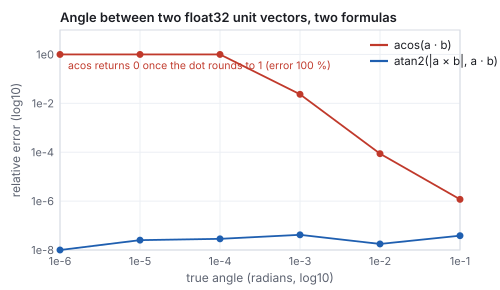

This chapter links to the course’s interactive demos and uses MathJax for its
formulas. Read it through the course website (or download the file and open it in a
browser); a Canvas inline preview will reach neither the demos nor the math.
All chapters.
Vectors: Dot and Cross Products, Lines and Planes
CSS 551 · Advanced 3D Computer Graphics · course text
Course text · the two products every later chapter is built from, the shapes they describe, the coordinates they let you change, and the arithmetic they run on. Assigned by your offering’s course site; pairs with the lecture on vectors and rotations.
A vector is a displacement: a direction with a length, not a place. Two operations on vectors carry the whole of this course. The dot product answers “how aligned are these?” and yields angles, projections and which-side tests; the cross product answers “what is perpendicular to both?” and yields normals, areas, volumes and coordinate frames. Lines and planes are then a point plus a direction, or a point plus a normal, and every question about them, including where a ray meets a plane and where a point sits inside a triangle, is one of the two products again. One pair of vectors, \(\mathbf{a} = (2, 1, 0)\) and \(\mathbf{b} = (1, 2, 1)\), runs through every worked example and through the live demo, so the numbers on the page and the numbers on the screen agree to the last digit. The chapter closes with the arithmetic itself: what single-precision floating point does to a dot product between nearly parallel vectors, and which formula to use instead.
Two different things wear the same three numbers \((x, y, z)\). A position
is a place, measured from the origin. A displacement is how to get from
one place to another: an arrow with a direction and a length, which you may pick up and
put down anywhere. A position is the special displacement from the origin, and that is
the only reason a point and a vector look alike. The distinction returns with force in
the affine chapter, where a translation moves points
and leaves displacements alone.
Definition (the vector operations)
For \(\mathbf{u}, \mathbf{v} \in \mathbb{R}^3\) and a scalar \(s\):
\[
\mathbf{u} + \mathbf{v} = (u_x + v_x,\; u_y + v_y,\; u_z + v_z), \qquad
s\,\mathbf{v} = (s v_x,\; s v_y,\; s v_z), \qquad
\|\mathbf{v}\| = \sqrt{v_x^2 + v_y^2 + v_z^2}, \qquad
\hat{\mathbf{v}} = \mathbf{v} / \|\mathbf{v}\| .
\]
The displacement from a point \(P_i\) to a point \(P_j\) is tip minus tail,
\(P_j - P_i\). A unit vector \(\hat{\mathbf{v}}\) has length 1 and is the honest
representation of a direction: no length smuggled in.
Worked example (aim and march)
A drone at \(A = (1, 0, 2)\) must fire at a target at \(R = (4, 0, -2)\). The aim is the
displacement \(R - A = (3, 0, -4)\), of length \(\sqrt{9 + 16} = 5\), so the unit aim is
\((0.6, 0, -0.8)\). Marching at speed 10 for a frame of \(0.016\) s moves the projectile
by \(10 \times 0.016 \times (0.6, 0, -0.8) = (0.096, 0, -0.128)\): a scale, then an add.
Reverse the subtraction and the projectile flies away from the target, which is the
first bug everyone writes.
1.1 Bases and coordinates
The three numbers of a vector are its coefficients in a basis: \(\mathbf{v} = v_x\hat{\mathbf{x}} + v_y\hat{\mathbf{y}} + v_z\hat{\mathbf{z}}\),
a linear combination of the three axis vectors. Any three vectors that do not lie in
a common plane can serve as a basis, and the same displacement then has different
coordinates. The useful case is an orthonormal basis, three mutually
perpendicular unit vectors \(\mathbf{e}_1, \mathbf{e}_2, \mathbf{e}_3\), because then the coordinates
need no equation solving:
Coordinates in an orthonormal basis
\[
\mathbf{v} = (\mathbf{v}\cdot\mathbf{e}_1)\,\mathbf{e}_1 + (\mathbf{v}\cdot\mathbf{e}_2)\,\mathbf{e}_2 + (\mathbf{v}\cdot\mathbf{e}_3)\,\mathbf{e}_3 .
\]
Each coordinate is one dot product (the projection of Section 2.1, one axis at a time), and
\(\|\mathbf{v}\|^2\) is the sum of their squares in any orthonormal basis. This is what the
camera does to every vertex in the viewing chapter: three dot
products against its own axes.
Worked example (the pair in their own frame)
Section 4 builds an orthonormal frame from \(\mathbf{a}\) and \(\mathbf{b}\):
\(\mathbf{w} = (0.894, 0.447, 0)\), \(\mathbf{u} = (0.267, -0.535, 0.802)\), \(\mathbf{t} = (0.359, -0.717, -0.598)\).
The coordinates of \(\mathbf{a}\) in that frame are \((\mathbf{a}\cdot\mathbf{w}, \mathbf{a}\cdot\mathbf{u}, \mathbf{a}\cdot\mathbf{t}) = (2.236, 0, 0)\):
\(\mathbf{a}\) is the frame’s first axis, at its own length. The coordinates of \(\mathbf{b}\) are
\((1.789, 0, -1.673)\): \(1.789\) along \(\mathbf{a}\) (the shadow of Section 2.1 again, \(4/\sqrt5\)) and
\(1.673\) across it, the parallelogram height of Section 3, with no component along
\(\mathbf{u}\) because \(\mathbf{u}\) is perpendicular to the plane of the pair. Rebuilding,
\(1.789\,\mathbf{w} - 1.673\,\mathbf{t} = (1, 2, 1)\), and \(1.789^2 + 1.673^2 = 6 = \|\mathbf{b}\|^2\).
2 · The dot product
Three questions, one number: how aligned are two directions, how much of one points along the other, and is a thing in front of me or behind me.
Definition (dot product)
\[
\mathbf{a}\cdot\mathbf{b} \;=\; a_x b_x + a_y b_y + a_z b_z \;=\; \|\mathbf{a}\|\,\|\mathbf{b}\|\cos\theta ,
\]
where \(\theta\) is the angle between the vectors. The first form is how to compute it
(three multiplies, two adds); the second is what it means. Their equality is the entire
power of the dot product: set them equal and the angle falls out,
\(\cos\theta = \mathbf{a}\cdot\mathbf{b} / (\|\mathbf{a}\|\|\mathbf{b}\|)\). It is symmetric,
\(\mathbf{a}\cdot\mathbf{b} = \mathbf{b}\cdot\mathbf{a}\), and linear in each argument, so
\(\mathbf{a}\cdot(s\mathbf{b} + \mathbf{c}) = s\,\mathbf{a}\cdot\mathbf{b} + \mathbf{a}\cdot\mathbf{c}\).
The pair that runs through this chapter and the demo. The amber arrow is the shadow of \(\mathbf{a}\) on \(\mathbf{b}\), the green one is what is left over, and the purple arrow is \(\mathbf{a}\times\mathbf{b}\), perpendicular to both (drawn at 40 % of its length so it fits).
Worked example (the dot, the lengths, the angle)
With \(\mathbf{a} = (2,1,0)\) and \(\mathbf{b} = (1,2,1)\):
The scalar \((\mathbf{a}\cdot\mathbf{b})/(\mathbf{b}\cdot\mathbf{b})\) is how many copies of
\(\mathbf{b}\) fit in the shadow of \(\mathbf{a}\). When \(\mathbf{b}\) is a unit vector the
denominator is 1 and \(\mathbf{a}\cdot\hat{\mathbf{b}}\) is directly the shadow’s
length, positive or negative. This split is the move behind reflection
(the illumination chapter builds the mirror
direction from it), Rodrigues’ rotation formula in
the rotation chapter, and the frame construction of
Section 4.
Worked example (the split, and the check)
\(\mathbf{a}\cdot\mathbf{b} = 4\) and \(\mathbf{b}\cdot\mathbf{b} = 6\), so the scalar is \(2/3\).
\[
\mathbf{a}_{\parallel} = \tfrac23 (1, 2, 1) = (0.667, 1.333, 0.667), \qquad
\mathbf{a}_{\perp} = (2, 1, 0) - (0.667, 1.333, 0.667) = (1.333, -0.333, -0.667).
\]
Check that the remainder is perpendicular to \(\mathbf{b}\), in exact thirds:
\(\mathbf{a}_{\perp}\cdot\mathbf{b} = \tfrac43\cdot1 - \tfrac13\cdot2 - \tfrac23\cdot1 = \tfrac{4 - 2 - 2}{3} = 0\).
The two pieces rebuild \(\mathbf{a}\), and one dot product proves the split is right.
2.2 The sign is a decision
No square root, no arccosine: the sign of the dot product alone says acute, right, or obtuse. The amber dot is the foot of \(\mathbf{b}\) on the line of \(\mathbf{a}\); it sits ahead of the origin, on it, or behind it.
If \(\mathbf{a}\) is the way the drone faces and \(\mathbf{b}\) points toward the target,
\(\mathbf{a}\cdot\mathbf{b} > 0\) means the target is ahead. Section 6 reuses this sign
verbatim as the which-side-of-a-plane test, and
Lambert’s law clamps exactly this sign to
decide whether a surface faces a light.
See it liveDot and cross products:
the same six numbers drive the 3D arrows and the value panel. Drag \(\mathbf{a}\) past
square to \(\mathbf{b}\) and watch the dot cross zero while the projection collapses.
3 · The cross product
The dot gives a number; sometimes a direction is needed: which way a triangle faces, a third axis given two, the size of the parallelogram two edges span.
Definition (cross product)
\[
\mathbf{a}\times\mathbf{b} \;=\; \big(a_y b_z - a_z b_y,\;\; a_z b_x - a_x b_z,\;\; a_x b_y - a_y b_x\big),
\]
a vector perpendicular to both inputs, with length \(\|\mathbf{a}\|\|\mathbf{b}\|\sin\theta\)
(the area of the parallelogram they span) and direction given by the right-hand rule:
fingers along \(\mathbf{a}\), curl toward \(\mathbf{b}\), thumb along \(\mathbf{a}\times\mathbf{b}\).
Swapping the inputs flips it: \(\mathbf{b}\times\mathbf{a} = -(\mathbf{a}\times\mathbf{b})\), and
\(\mathbf{a}\times\mathbf{a} = \mathbf{0}\). It is linear in each argument but not associative:
\(\mathbf{a}\times(\mathbf{b}\times\mathbf{c})\) and \((\mathbf{a}\times\mathbf{b})\times\mathbf{c}\) differ in general.
The component formula has a cyclic pattern (the \(x\) component uses \(y\) and \(z\), the
\(y\) component uses \(z\) and \(x\), the \(z\) component uses \(x\) and \(y\)), which is
how to remember it. It exists only in three dimensions; in two, the single number
\(a_x b_y - a_y b_x\) plays its part, and that number is the edge function of
the rasterization chapter.
Worked example (the cross, and two proofs)
\[
\mathbf{a}\times\mathbf{b} = (1\cdot1 - 0\cdot2,\; 0\cdot1 - 2\cdot1,\; 2\cdot2 - 1\cdot1) = (1, -2, 3).
\]
Perpendicular to both, each dot must vanish:
\((1,-2,3)\cdot(2,1,0) = 2 - 2 + 0 = 0\) and \((1,-2,3)\cdot(1,2,1) = 1 - 4 + 3 = 0\).
Its length is \(\sqrt{1 + 4 + 9} = \sqrt{14} = 3.742\). The geometric form gives the same:
\(\sqrt5\cdot\sqrt6\cdot\sin 43.1^\circ = 5.477 \times 0.683 = 3.742\). Reversed,
\(\mathbf{b}\times\mathbf{a} = (-1, 2, -3)\).
The parallelogram spanned by \(\mathbf{a}\) and \(\mathbf{b}\), drawn in the plane they share. Base times height is \(2.236 \times 1.673 = 3.742\), which is \(\|\mathbf{a}\times\mathbf{b}\|\). A triangle on the same two edges has half that area, \(1.871\), which is how a mesh face’s area is found.
3.1 The normal of a triangle
A face with corners \(P_0, P_1, P_2\) has edges \(\mathbf{e}_1 = P_1 - P_0\) and
\(\mathbf{e}_2 = P_2 - P_0\), and its normal is \(\hat{\mathbf{n}} = \widehat{\mathbf{e}_1\times\mathbf{e}_2}\).
Which side the normal points to is decided by the order of the corners, so a mesh whose
faces are wound inconsistently has half its normals pointing inward. This single idea,
normal equals normalized cross of two edges, reappears in
meshes, lighting, and collision for the rest of the course.
Worked example (a face normal)
\(P_0 = (0,0,0)\), \(P_1 = (2,0,0)\), \(P_2 = (0,0,-2)\): edges \((2,0,0)\) and \((0,0,-2)\),
cross \((0\cdot(-2) - 0\cdot0,\; 0\cdot0 - 2\cdot(-2),\; 0) = (0, 4, 0)\), normal \((0,1,0)\):
the face lies in the ground plane and faces up. Swap \(P_1\) and \(P_2\) and the normal is
\((0,-1,0)\), facing down. Same triangle, opposite winding. The length 4 is twice the
triangle’s area of 2, and Section 7 divides by it.
3.2 The scalar triple product: volume and handedness
Definition (scalar triple product)
\[
[\mathbf{a}, \mathbf{b}, \mathbf{c}] = \mathbf{a}\cdot(\mathbf{b}\times\mathbf{c}) = \det\begin{pmatrix} a_x & a_y & a_z \\ b_x & b_y & b_z \\ c_x & c_y & c_z \end{pmatrix},
\]
the signed volume of the parallelepiped with edges \(\mathbf{a}, \mathbf{b}, \mathbf{c}\): positive
when the triple is right-handed (curl from \(\mathbf{a}\) to \(\mathbf{b}\), thumb on the same side
as \(\mathbf{c}\)), zero when the three lie in a plane. It is unchanged by a cyclic shift
(\([\mathbf{b}, \mathbf{c}, \mathbf{a}] = [\mathbf{a}, \mathbf{b}, \mathbf{c}]\)) and negated by swapping any two.

The box on \(\mathbf{a}, \mathbf{b}, \mathbf{c}\). Its base is the parallelogram on \(\mathbf{b}\) and \(\mathbf{c}\), whose area is \(\|\mathbf{b}\times\mathbf{c}\|\); dotting the base normal with \(\mathbf{a}\) picks out \(\mathbf{a}\)’s height above the base, and area times height is volume.
Worked example (the volume, and a flipped sign)
With \(\mathbf{c} = (0, 0, 1)\): \(\mathbf{b}\times\mathbf{c} = (2\cdot1 - 1\cdot0,\; 1\cdot0 - 1\cdot1,\; 0) = (2, -1, 0)\), and
\(\mathbf{a}\cdot(2, -1, 0) = 4 - 1 = 3\). The determinant of the rows \((2,1,0), (1,2,1), (0,0,1)\)
expands along its last row to \(1\cdot(2\cdot2 - 1\cdot1) = 3\), the same number. The
tetrahedron on the same three edges has one sixth of it, \(0.5\). Swapping \(\mathbf{b}\) and
\(\mathbf{c}\): \(\mathbf{a}\cdot(\mathbf{c}\times\mathbf{b}) = -3\), the mirror-image box. The sign is the
determinant test of the affine chapter: a transform
with negative determinant turns every right-handed triple into a left-handed one.
4 · From two vectors to a frame
Given any two non-parallel vectors, one cross product gives an axis square to both and a
second cross completes an orthonormal trio. This is exactly how a camera’s
look-at basis is built in the viewing chapter:
\[
\mathbf{w} = \hat{\mathbf{a}}, \qquad
\mathbf{u} = \widehat{\mathbf{a}\times\mathbf{b}}, \qquad
\mathbf{t} = \widehat{\mathbf{a}\times(\mathbf{a}\times\mathbf{b})} .
\]
Three unit vectors from the pair \(\mathbf{a}, \mathbf{b}\): \(\mathbf{w} = (0.894, 0.447, 0)\), \(\mathbf{u} = (0.267, -0.535, 0.802)\), \(\mathbf{t} = (0.359, -0.717, -0.598)\). Every pairwise dot product is zero.
Worked example (three right angles)
\(\mathbf{a}\times(\mathbf{a}\times\mathbf{b}) = (2,1,0)\times(1,-2,3) = (1\cdot3 - 0,\; 0 - 2\cdot3,\; -4 - 1) = (3, -6, -5)\).
The three raw directions \((2,1,0)\), \((1,-2,3)\), \((3,-6,-5)\) are mutually
perpendicular: \((2,1,0)\cdot(1,-2,3) = 0\) was shown above;
\((2,1,0)\cdot(3,-6,-5) = 6 - 6 + 0 = 0\); \((1,-2,3)\cdot(3,-6,-5) = 3 + 12 - 15 = 0\).
Normalize each and the frame is orthonormal. Note the second cross uses \(\mathbf{a}\)
again, not \(\mathbf{b}\): \(\mathbf{b}\) is only needed once, to say which plane the first
axis should be square to.
4.1 Gram–Schmidt: a frame from any three vectors
The cross-product recipe is specific to three dimensions. The general recipe, which works
in any dimension and is what a linear-algebra library uses, is Gram–Schmidt
orthogonalization: take the vectors in order, and from each subtract its projections
onto the axes already built, then normalize. The projection is Section 2.1’s split, applied
once per finished axis.
Gram–Schmidt
\[
\mathbf{e}_1 = \hat{\mathbf{a}}, \qquad
\mathbf{e}_2 = \widehat{\mathbf{b} - (\mathbf{b}\cdot\mathbf{e}_1)\mathbf{e}_1}, \qquad
\mathbf{e}_3 = \widehat{\mathbf{c} - (\mathbf{c}\cdot\mathbf{e}_1)\mathbf{e}_1 - (\mathbf{c}\cdot\mathbf{e}_2)\mathbf{e}_2}.
\]
The first vector keeps its direction; the second keeps its plane with the first; the third
is whatever is left. If some input lies in the span of the earlier ones, the remainder is
zero and the normalize fails: the inputs were not a basis.
Worked example (Gram–Schmidt on \(\mathbf{a}, \mathbf{b}, \mathbf{c}\))
\(\mathbf{e}_1 = (0.894, 0.447, 0)\). Then \(\mathbf{b}\cdot\mathbf{e}_1 = 1.789\), so
\(\mathbf{b} - 1.789\,\mathbf{e}_1 = (1, 2, 1) - (1.6, 0.8, 0) = (-0.6, 1.2, 1)\), which normalizes to
\(\mathbf{e}_2 = (-0.359, 0.717, 0.598)\). With \(\mathbf{c} = (0, 0, 1)\): \(\mathbf{c}\cdot\mathbf{e}_1 = 0\),
\(\mathbf{c}\cdot\mathbf{e}_2 = 0.598\), so the remainder is \((0, 0, 1) - 0.598\,\mathbf{e}_2 = (0.214, -0.429, 0.643)\),
normalized \(\mathbf{e}_3 = (0.267, -0.535, 0.802)\). Compare with Section 4: \(\mathbf{e}_3\) is exactly
\(\mathbf{u} = \widehat{\mathbf{a}\times\mathbf{b}}\), and \(\mathbf{e}_2 = -\mathbf{t}\). The two recipes build
the same frame up to the order and sign of its axes, and \(\mathbf{e}_1\times\mathbf{e}_2 = (0.267, -0.535, 0.802) = \mathbf{e}_3\),
so this one came out right-handed.
5 · Lines and segments
Definition (parametric line, segment)
A line is a base point and a direction, \(P(t) = P_0 + t\,\mathbf{d}\), \(t\in\mathbb{R}\);
with \(\mathbf{d}\) unit, \(t\) is a distance along it. A segment from
\(P_0\) to \(P_1 = P_0 + \mathbf{v}\) is the same with \(t\) held to \([0, \|\mathbf{v}\|]\).
A ray keeps \(t \ge 0\).
The nearest point on a line to a query point \(P_t\) is a projection: dot the offset
\(P_t - P_0\) against the unit direction to get the distance \(d\) along the line, and step
that far. For a segment, clamp \(d\) to the endpoints first. That clamp is the one line
separating “the infinite line” from “the thing you can walk on”.
Nearest point on a segment, three cases. The dashed drop is the perpendicular to the infinite line; where its foot falls outside \([0, \|\mathbf{v}\|]\), the nearest point of the segment is the end it overshot (ringed).
Worked example (point to segment, three points)
Segment \(P_0 = (0,0)\) to \(P_1 = (4,2)\): \(\mathbf{v} = (4,2)\), \(\|\mathbf{v}\| = 4.472\),
\(\hat{\mathbf{v}} = (0.894, 0.447)\).
\(P_t\)
\(d = (P_t - P_0)\cdot\hat{\mathbf{v}}\)
foot \(P_0 + d\hat{\mathbf{v}}\)
inside?
nearest point of the segment
\((1, 3)\)
\(0.894 + 1.342 = 2.236\)
\((2, 1)\)
yes
\((2, 1)\), at distance \(2.236\)
\((6, 4)\)
\(5.367 + 1.789 = 7.155\)
\((6.4, 3.2)\)
no, \(d > 4.472\)
the far end \((4, 2)\)
\((-1, 1)\)
\(-0.894 + 0.447 = -0.447\)
\((-0.4, -0.2)\)
no, \(d < 0\)
the start \((0, 0)\)
Every entry is a dot, a scale, an add, or a comparison.
5.1 Distance to a line in three dimensions
The foot construction works in any dimension, but in three the cross product gives the
distance in one step: the offset \(\mathbf{p} = P_t - P_0\) and the unit direction
\(\hat{\mathbf{d}}\) span a parallelogram of base 1 and height equal to the distance, so
\(\text{dist} = \|\mathbf{p}\times\hat{\mathbf{d}}\|\), while \(\mathbf{p}\cdot\hat{\mathbf{d}}\) is the
distance along the line. The two are the legs of a right triangle whose hypotenuse is
\(\|\mathbf{p}\|\).
Worked example (\(\mathbf{a}\) against the line of \(\mathbf{b}\))
The line through the origin along \(\hat{\mathbf{b}} = (0.408, 0.816, 0.408)\), and the point at
\(\mathbf{a}\). Along: \(\mathbf{a}\cdot\hat{\mathbf{b}} = 4/\sqrt6 = 1.633\). Across:
\(\|\mathbf{a}\times\hat{\mathbf{b}}\| = \sqrt{14}/\sqrt6 = 1.528\). Check:
\(1.633^2 + 1.528^2 = 2.667 + 2.333 = 5 = \|\mathbf{a}\|^2\). The across value is the length of
\(\mathbf{a}_\perp\) from Section 2.1, \(\|(1.333, -0.333, -0.667)\| = 1.528\), reached without
computing the vector.
6 · Planes and signed distance
Definition (plane)
A plane is the set of points whose dot product with a fixed normal is constant,
\[
\hat{\mathbf{n}}\cdot P = D, \qquad D = \hat{\mathbf{n}}\cdot Q \text{ for any known point } Q \text{ on the plane.}
\]
With \(\hat{\mathbf{n}}\) unit, \(D\) is the plane’s signed distance from the origin
and, for any point \(P\), the signed distance to the plane is
\(\hat{\mathbf{n}}\cdot P - D\): positive on the side the normal points to, zero on the plane,
negative behind. Three points \(P_0, P_1, P_2\) define the plane with
\(\hat{\mathbf{n}} = \widehat{(P_1 - P_0)\times(P_2 - P_0)}\) and \(Q = P_0\).
The plane through \(Q\) with normal \(\hat{\mathbf{n}}\). The signed distance is one dot product and one subtraction; its sign is the which-side test.
Worked example (point to plane)
Plane through \(Q = (1,0,0)\) with normal \(\mathbf{m} = (1,2,2)\). Normalize first:
\(\|\mathbf{m}\| = \sqrt{1 + 4 + 4} = 3\), \(\hat{\mathbf{n}} = (\tfrac13, \tfrac23, \tfrac23)\),
\(D = \hat{\mathbf{n}}\cdot Q = \tfrac13\). For \(P = (4, 1, 0)\):
\[
\hat{\mathbf{n}}\cdot P - D = \frac{4 + 2 + 0}{3} - \frac13 = \frac{5}{3} = 1.667 \quad (\text{in front}).
\]
For \((-1, 0, 0)\): \(-\tfrac13 - \tfrac13 = -0.667\), behind. The foot of \(P\) on the plane
is \(P - 1.667\,\hat{\mathbf{n}} = (3.444, -0.111, -1.111)\); check:
\(\hat{\mathbf{n}}\cdot(3.444, -0.111, -1.111) = (3.444 - 0.222 - 2.222)/3 = 0.333 = D\).
Skipping the normalization is the common mistake: with \(\mathbf{m}\) unnormalized the
“distance” would be three times too large.
The which-side test needs no distance at all: the sign of
\(\hat{\mathbf{n}}\cdot P - D\) is the in-front-of test of Section 2.2 with the plane’s
constant subtracted. Frustum culling, back-face tests and portal visibility are this sign,
evaluated many times. Under a transform a plane does not move like a point;
the affine chapter gives the rule.
6.1 Where a ray meets a plane
Ray–plane intersection
Substitute the ray \(P(t) = \mathbf{o} + t\,\mathbf{d}\) into the plane equation
\(\hat{\mathbf{n}}\cdot P = D\) and solve for \(t\):
\[
t = \frac{D - \hat{\mathbf{n}}\cdot\mathbf{o}}{\hat{\mathbf{n}}\cdot\mathbf{d}} .
\]
The numerator is minus the signed distance of the ray’s origin; the denominator is how
fast the ray closes on the plane. If \(\hat{\mathbf{n}}\cdot\mathbf{d} = 0\) the ray runs
parallel and there is no hit; if \(t < 0\) the plane is behind the origin.
Worked example (four rays, one plane)
The plane above, \(\hat{\mathbf{n}} = (\tfrac13, \tfrac23, \tfrac23)\), \(D = \tfrac13\).
origin \(\mathbf{o}\)
direction \(\mathbf{d}\)
\(\hat{\mathbf{n}}\cdot\mathbf{d}\)
\(t\)
hit
\((4, 1, 0)\)
\(-\hat{\mathbf{n}}\)
\(-1\)
\((\tfrac13 - \tfrac53)/(-1) = 1.667\)
\((3.444, -0.111, -1.111)\), the foot of Section 6
\((0, 0, 0)\)
\((1, 0, 0)\)
\(\tfrac13\)
\((\tfrac13 - 0)/\tfrac13 = 1\)
\((1, 0, 0) = Q\)
\((0, 0, 0)\)
\((0, 1, -1)/\sqrt2\)
\(0\)
none
parallel: the direction lies in the plane
\((4, 1, 0)\)
\(+\hat{\mathbf{n}}\)
\(1\)
\(-1.667\)
behind the origin: a ray never reaches it
The first row walks straight down the normal and covers exactly the signed distance; the
second walks along \(x\) and closes at a third of the rate, so it needs three times the
distance to cover a third of the gap. The ray-tracing
chapter uses this formula for every triangle’s plane and the sphere’s quadratic for
everything round; the interaction chapter uses it to land a
dragged object on the ground.
7 · Barycentric coordinates in a triangle
A point in the plane of a triangle can be written as a weighted average of the corners,
\(X = w_0 P_0 + w_1 P_1 + w_2 P_2\) with \(w_0 + w_1 + w_2 = 1\). The weights are the
barycentric coordinates of \(X\), and they are ratios of areas, which the cross
product supplies:
Barycentric coordinates from cross products
With \(\mathbf{n} = (P_1 - P_0)\times(P_2 - P_0)\),
\[
w_0 = \frac{\big((P_1 - X)\times(P_2 - X)\big)\cdot\mathbf{n}}{\mathbf{n}\cdot\mathbf{n}}, \quad
w_1 = \frac{\big((P_2 - X)\times(P_0 - X)\big)\cdot\mathbf{n}}{\mathbf{n}\cdot\mathbf{n}}, \quad
w_2 = \frac{\big((P_0 - X)\times(P_1 - X)\big)\cdot\mathbf{n}}{\mathbf{n}\cdot\mathbf{n}} .
\]
Each numerator is twice the signed area of the sub-triangle opposite one corner, projected
onto the face normal; the denominator is twice the whole area, squared. \(X\) is inside the
triangle exactly when all three weights are non-negative. Any per-vertex quantity (a color,
a normal, a texture coordinate) is interpolated to \(X\) with the same weights.

The face-normal triangle of Section 3.1, seen from above. Each weight is the area of the sub-triangle opposite that corner, as a fraction of the whole; a point past an edge gets a negative weight for the corner across from that edge.
Worked example (inside, on an edge, outside)
\(P_0 = (0,0,0)\), \(P_1 = (2,0,0)\), \(P_2 = (0,0,-2)\), \(\mathbf{n} = (0, 4, 0)\), \(\mathbf{n}\cdot\mathbf{n} = 16\).
For \(X = (0.5, 0, -0.5)\): \(P_1 - X = (1.5, 0, 0.5)\), \(P_2 - X = (-0.5, 0, -1.5)\), cross
\((0\cdot(-1.5) - 0.5\cdot0,\; 0.5\cdot(-0.5) - 1.5\cdot(-1.5),\; 0) = (0, 2, 0)\), dotted with
\(\mathbf{n}\): 8, so \(w_0 = 8/16 = 0.5\). The other two come out \(0.25\) each, they sum to 1,
and \(0.5\,P_0 + 0.25\,P_1 + 0.25\,P_2 = (0.5, 0, -0.5)\) rebuilds \(X\). The centroid
\((\tfrac23, 0, -\tfrac23)\) gets \((\tfrac13, \tfrac13, \tfrac13)\). The midpoint of the
hypotenuse, \((1, 0, -1)\), gets \((0, 0.5, 0.5)\): a zero weight means on that edge. The point
\((2, 0, -2)\) gets \((-1, 1, 1)\): the weights still sum to 1 and still rebuild the point, but
the negative \(w_0\) says it lies beyond the edge opposite \(P_0\).
The rasterization chapter computes the same
weights in two dimensions with edge functions and uses them for every interpolated
attribute; the ray-tracing chapter uses the
three-dimensional form above to decide whether a ray’s hit on a triangle’s plane lies
within the triangle.
8 · What floating point does to all of this
A GPU and most of a game run in single precision, whose relative resolution is
\(\varepsilon = 2^{-23} \approx 1.2\times10^{-7}\): a number near 1 can only be represented to
about seven decimal digits. Most of the chapter is immune to that. Two operations are not.
PitfallThe angle from \(\arccos(\mathbf{a}\cdot\mathbf{b})\) is useless for small angles.
Near \(\theta = 0\), \(\cos\theta \approx 1 - \theta^2/2\), so the dot product of two unit
vectors \(\theta\) apart differs from 1 by only \(\theta^2/2\). Once that is below \(\varepsilon\),
the dot rounds to exactly 1 and the angle to exactly 0. The threshold is
\(\theta = \sqrt{2\varepsilon} = 4.9\times10^{-4}\) radians, about \(0.03^\circ\), and the loss
starts well before it. Measured in float32 arithmetic on \((1, 0, 0)\) against \((\cos\theta, \sin\theta, 0)\):
The cross product’s length is \(\sin\theta \approx \theta\), which keeps its full seven digits
however small \(\theta\) is, and \(\mathrm{atan2}\) of the two never loses them. Use it whenever
an angle between nearly parallel directions matters: joint limits, snapping, the slerp of
the animation chapter. The same rounding can push a dot
product a hair past 1 or \(-1\), where \(\arccos\) returns NaN; clamp before you call it.
In float32 the normalized \((1,1,1)\) dotted with itself gives \(0.99999994\), an angle of
\(0.02^\circ\) between a vector and itself.

The two formulas measured in single precision. The \(\arccos\) route loses a digit for every halving of the angle and fails outright below \(10^{-4}\); the \(\mathrm{atan2}\) route is flat at the precision of the inputs.
The second hazard is normalizing a short vector. The length is a square root
of a sum of squares, and squares underflow: in float32, \((10^{-20})^2\) is a denormal
\(10^{-40}\) that still works, but \((10^{-25})^2\) is exactly 0, so a vector of length
\(1.4\times10^{-25}\) normalizes to \(0/0\). A vector that small arises whenever a cross product
is taken of nearly parallel inputs (the look-at failure of Exercise 4) or a difference of two
nearly equal points. The guard in every library, including the course’s, is a length test
before the divide; what it should return when the test fails is the caller’s decision, and
the meshes chapter returns a fixed up vector for a degenerate
normal.
Dot products of long vectors have a third, milder hazard: catastrophic cancellation. The dot
of \((10^6, 1, 0)\) with \((1, -10^6, 0)\) is \(10^6 - 10^6 = 0\) in exact arithmetic, but each
product is known only to about \(0.1\), so the computed sum is noise of that size. Positions
far from the origin are the usual source (a world a million units across, a camera near the
edge of it); the cure is to subtract a nearby reference point first, which is why the
camera’s view matrix is applied before anything else is computed on a vertex.
9 · The same operations in code
The course’s library (lib/core/xform.js) and Unity’s Vector3
expose exactly the atoms above: components, magnitude, normalize, dot, cross. The
implement-and-replace rule of the studios is to build the query from the atoms first, then
check it against the engine call. The point-to-segment query of Section 5, with the
library’s sub, dot and normalize and two one-line helpers:
const add = (p, q) => [p[0] + q[0], p[1] + q[1], p[2] + q[2]];
const scale = (p, s) => p.map((x) => x * s);
const v1 = sub(P1, P0); // segment direction
const v1n = normalize(v1); // unit direction
const d = dot(sub(Pt, P0), v1n); // projected distance along the line
const foot = add(P0, scale(v1n, d)); // the foot of the perpendicular
const inside = d >= 0 && d <= Math.hypot(...v1); // the clamp test
Two habits keep this code honest. Normalize before you dot when you want a length, or the
result is scaled by the direction’s magnitude. And guard against zero-length
vectors: a zero vector has no direction, so its angle with anything is undefined and the
division in the cosine formula blows up.
Hands-on
Run these from the css551/ directory; each prints the number the text quotes.
The dot, the cross, and the unit normal of the chapter’s pair:
In the dot-cross demo, set \(\mathbf{b}\) parallel to \(\mathbf{a}\) and read the cross product’s length in the panel; then set it antiparallel. Both give a zero cross product and dots of \(\pm\|\mathbf{a}\|\|\mathbf{b}\|\), the two cases where Section 4’s frame cannot be built.
10 · Exercises
Exercise 1 (angle)
Find the angle between \((1, 1, 0)\) and \((1, 0, 1)\).
Solution
Dot \(= 1\); both lengths \(\sqrt2\); \(\cos\theta = 1/2\); \(\theta = 60^\circ\). Two edges of a cube’s corner diagonal triangle: the triangle is equilateral.
Exercise 2 (projection)
Split \(\mathbf{a} = (3, 4, 0)\) along and across \(\mathbf{b} = (1, 0, 0)\), then along and across \(\mathbf{c} = (1, 1, 0)\).
Solution
Along \(\mathbf{b}\): scalar \(3/1\), \(\mathbf{a}_\parallel = (3,0,0)\), \(\mathbf{a}_\perp = (0,4,0)\).
Along \(\mathbf{c}\): scalar \(7/2\), \(\mathbf{a}_\parallel = (3.5, 3.5, 0)\), \(\mathbf{a}_\perp = (-0.5, 0.5, 0)\); check \((-0.5, 0.5, 0)\cdot(1,1,0) = 0\).
Exercise 3 (area)
A triangle has corners \((0,0,0)\), \((3,0,0)\), \((0,4,0)\). Compute its area two ways.
Solution
Edges \((3,0,0)\), \((0,4,0)\); cross \((0,0,12)\); half its length is 6. Base 3, height 4, half the product is 6.
Exercise 4 (a frame)
Build an orthonormal frame from \(\mathbf{a} = (0,0,1)\) and \(\mathbf{b} = (1,0,1)\). What goes wrong if \(\mathbf{b} = (0,0,2)\)?
Solution
\(\mathbf{w} = (0,0,1)\); \(\mathbf{a}\times\mathbf{b} = (0\cdot1 - 1\cdot0,\; 1\cdot1 - 0\cdot1,\; 0) = (0, 1, 0)\), so \(\mathbf{u} = (0,1,0)\); \(\mathbf{a}\times\mathbf{u} = (0\cdot0 - 1\cdot1,\; 1\cdot0 - 0\cdot0,\; 0) = (-1, 0, 0)\). With \(\mathbf{b} = (0,0,2)\) the cross is \((0,0,0)\): parallel inputs span no plane, and there is no way to choose the second axis. This is the “up parallel to the view direction” failure of every look-at function.
Exercise 5 (segment)
For the segment of Section 5, find the nearest point to \(P_t = (2, -2)\) and the distance to it.
Solution
\(d = (2, -2)\cdot(0.894, 0.447) = 1.789 - 0.894 = 0.894\), inside; foot \(= 0.894\,(0.894, 0.447) = (0.8, 0.4)\); distance \(\|(2,-2) - (0.8, 0.4)\| = \sqrt{1.44 + 5.76} = 2.683\).
Exercise 6 (which side)
The plane of Section 6 again. Classify \((0,0,0)\), \((1,1,1)\) and \((2,-1,0)\).
Solution
\(\hat{\mathbf{n}}\cdot P - D\): \(0 - \tfrac13 = -0.333\) (behind); \(\tfrac{5}{3} - \tfrac13 = 1.333\) (in front); \(\tfrac{2 - 2 + 0}{3} - \tfrac13 = -0.333\) (behind). The origin is behind the plane because \(D > 0\) puts the plane on the normal’s side of it.
Exercise 7 (triple product)
Are \((1, 2, 3)\), \((2, 4, 6)\), \((0, 1, 0)\) a basis? And \((1, 0, 0)\), \((1, 1, 0)\), \((1, 1, 1)\)? Give the handedness of the second triple.
Solution
First: the second vector is twice the first, so the triple product is 0 (\((2,4,6)\times(0,1,0) = (-6, 0, 2)\), dotted with \((1,2,3)\): \(-6 + 6 = 0\)): coplanar, not a basis. Second: \((1,1,0)\times(1,1,1) = (1, -1, 0)\), dotted with \((1,0,0)\): \(1 > 0\): a right-handed basis with unit volume, though far from orthonormal.
Exercise 8 (ray and plane)
A ray from \((0, 5, 0)\) in direction \((0.6, -0.8, 0)\) meets the ground plane \(y = 0\) where? Write the plane as \(\hat{\mathbf{n}}\cdot P = D\) first.
Solution
\(\hat{\mathbf{n}} = (0,1,0)\), \(D = 0\). \(\hat{\mathbf{n}}\cdot\mathbf{d} = -0.8\), \(\hat{\mathbf{n}}\cdot\mathbf{o} = 5\), so \(t = (0 - 5)/(-0.8) = 6.25\) and the hit is \((3.75, 0, 0)\). The ray descends 0.8 per unit of \(t\) and must descend 5.
Exercise 9 (barycentric, with code)
For the triangle of Section 7, compute the weights of \(X = (1, 0, -0.5)\) by hand, then check with a node one-liner built from sub, cross and dot. Is the point inside?
Solution
\(P_1 - X = (1, 0, 0.5)\), \(P_2 - X = (-1, 0, -1.5)\), cross \((0\cdot(-1.5) - 0.5\cdot0,\; 0.5\cdot(-1) - 1\cdot(-1.5),\; 0) = (0, 1, 0)\), dotted with \(\mathbf{n}\): 4, so \(w_0 = 4/16 = 0.25\). \(P_2 - X = (-1, 0, -1.5)\), \(P_0 - X = (-1, 0, 0.5)\), cross \((0\cdot0.5 - (-1.5)\cdot0,\; (-1.5)(-1) - (-1)(0.5),\; 0) = (0, 2, 0)\), so \(w_1 = 8/16 = 0.5\). Then \(w_2 = 1 - 0.75 = 0.25\). All positive: inside. Code:
Exercise 10 (precision, with code)
Two unit vectors \(2\times10^{-4}\) radians apart. Using Math.fround on every operation as in the hands-on block, compute their angle both ways and report which is usable.
Solution
\(\cos(2\times10^{-4}) = 1 - 2\times10^{-8}\), below float32’s resolution near 1, so the rounded dot is exactly 1 and \(\arccos\) returns 0. The cross product’s \(z\) component is \(\sin(2\times10^{-4}) = 2.0000\times10^{-4}\) to seven digits, and \(\mathrm{atan2}(2\times10^{-4}, 1) = 2.0000\times10^{-4}\). Only the second is usable; the table in Section 8 brackets this case between its \(10^{-4}\) and \(10^{-3}\) rows.